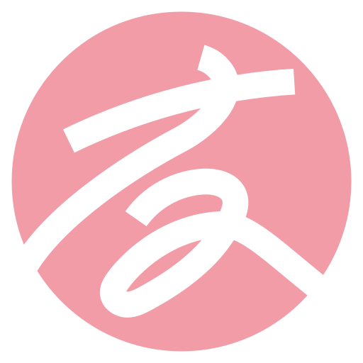

01
完善長照 打造高齡友善環境
整合長照、健康與社區照顧資源，簡化長照申請流程， 讓草屯、中寮的長輩獲得更便利、更安心的照顧， 也減輕家庭照顧負擔。

服務不是一句口號，而是願意走進地方， 聽見每一個人的需求，再一起找到解決問題的方法。
從法律服務、急難救助，到道路交通與地方建設， 每一件事情背後，都是一個家庭、一條道路， 或一個地方真正需要被看見的問題。
從長照、婦幼、青年、教育文化、運動建設到區域發展， 以生活需求為出發點，一步一步打造更安心、更有活力的地方。
整合長照、健康與社區照顧資源，簡化長照申請流程， 讓草屯、中寮的長輩獲得更便利、更安心的照顧， 也減輕家庭照顧負擔。
廣設托育資源，減輕育兒負擔，持續關注婦女權益、 月經平權及弱勢與特殊境遇家庭， 建立更完整的家庭支持與照顧網絡。
串聯就業、創業、數位學習與創客資源， 鼓勵青年留鄉、返鄉發展，推動青銀共生， 讓年輕人在地方有更多參與及發揮的機會。
支持學校教育、在地藝術家及藝文團隊， 推廣藝文展演與文化活動，保存草屯、中寮的地方故事、 技藝與特色，讓在地文化持續傳承。
爭取草屯建置完善的匹克球場及運動空間， 提供安全、友善的運動環境，推廣全民運動， 鼓勵青銀世代共同參與，打造草屯新的休閒運動據點。
推動東草屯交流道周邊整體規劃， 完善人行道、自行車道及交通環境， 並結合地方產業、觀光與生活機能， 在兼顧居民需求及環境品質下，帶動地方穩健發展。
跟隨友友的腳步，看見草屯・中寮的改變
從校園安全、通學環境到運動建設與地方行腳， 用影像留下每一次關心、質詢與行動。